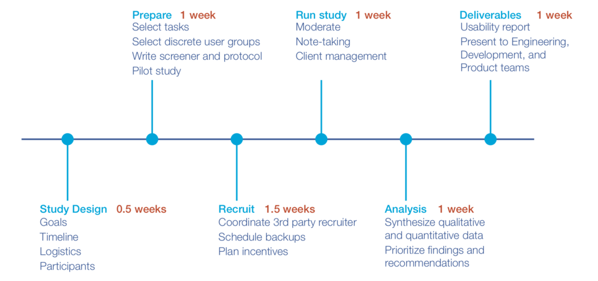
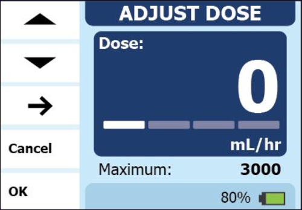
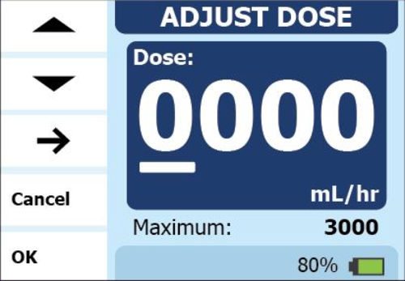
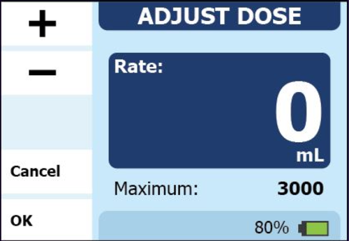
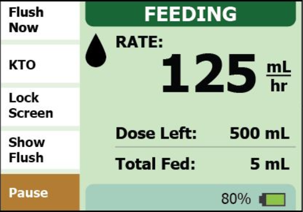
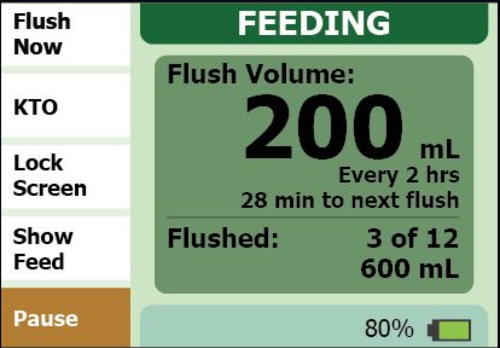
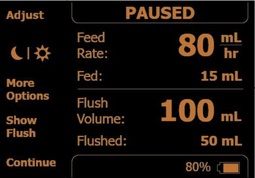
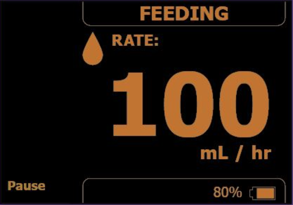
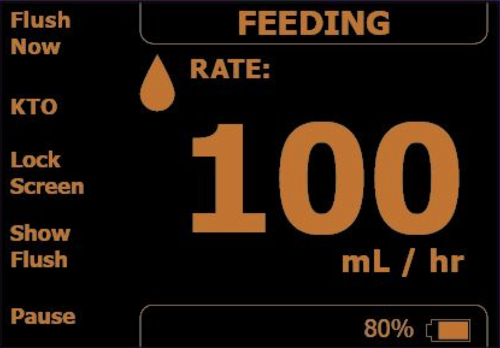

Study Design, Protocol Development, UI Development, Participant Recruitment, Moderation, Note-taking, Data Analysis,
Final Report & Presentation Writing
My Role:
User Researcher, Usability Tester
Methods:
User Interviews, Usability Testing, Card Sorting
Tools:
InDesign, Photoshop, Illustrator, Axure
About
The client wanted to revamp and modernize the outdated UI on their existing enteral feeding pump's display and needed
to down-select options for different features and refine the new Information Architecture.
The 3 features being tested with users on the new touchscreen UI were:
Programming different feeding settings
Navigating to and viewing the flush (water) settings
Switching the display into Night Display
RESEARCH GOALS
Identify the extent to which each design concept addressed user needs
Identify use errors associated with each concept
Identify users' preferences, perceived benefits, and concerns for each concept
THE CHALLENGE
Select one concept for each of the 3 tested features to move forward with.
Methodology

Participants
Target users were:
Acute Care nurses
Extended Care nurses
I developed a participant recruitment screener for our 3rd party recruiting partner to find 12 nurses who:
Ranged in nursing experience
Worked in either Acute Care (e.g. ICU) or Extended Care (e.g. Care Home)
Ranged in experience using an enteral feeding pump
Ranged in frequency using the feeding pump during the week
Interviews
Interview Structure:
Interviews were conducted as 1-on-1 sessions at a research facility and lasted 60 minutes.
Device Introduction: introduced feeding pump whose UI was being updated
Concept Evaluation: presented different concepts for each feature, observed usability, ease of use, and preferences
Wrap-Up: thanked and compensated participant
Stimuli
Feature 1 UI Concepts: Programming different feeding settings

D1-A: adjust each digit by moving underline (1 zero shown)

D1-B: adjust each digit with moving underline (3 zeroes shown)

D2-A: press and hold to increment by 1, then by 5, then by 10
D2-B: press and hold to increment by 1 (constant speed)
D2-C: press and hold to increment by 1 (faster speed)
D2-D: press and hold to increment by 10, tap to increment by 1
Questions:
How many zeroes do users want to see when starting to program?
Do users want to move between digit spots to adjust specific digits (D1) or adjust the entire number (D2)?
When pressing and holding (D2) the + or - buttons, how fast should the number increment?
Feature 2 UI Concepts: Navigating to and viewing flush (water) settings

F1: Show Flush button on Feeding screen

F1 (cont.): flush button and 5 sec flush information pop-up
Questions:
Do users notice the difference between the Feeding screen and the Flush pop-up?
How long should the pop-up persist on the screen?
Feature 3 UI Concepts: Switching display into Night Display

N1: Night Display button on Pause screen, reduced menu on Feeding screen

N1 (cont.): reduced menu on Feeding screen

N2: physical Night Display button on pump's frame, full menu on Feeding screen
Questions:
Do users want to toggle Night Display on the Feeding screen or the Pause screen?
Do users need to have a full menu on the Feeding screen when in Night Display?
Do users prefer the Night Display button to be a UI button or a physical button on the pump?
Findings
Feature 1: Programming different feeding settings
WINNER: D1-A
10/12 participants preferred D1-A (moving underline with 1 zero shown) over the other concepts. They felt D1-A required
much less time and was easier to enter the desire values with.
Feature 2: Navigating to and viewing flush (water) settings
WINNER: F1
Almost all participants liked having the flush info accessible via pop-up. They liked that the pop-up disappeared on
its own. A few wished the pop-up persisted slightly longer for adequate reading time and a few were unsure what the
bottom-most volume ("600 mL") represented and requested a clear label.
Feature 3: Switching display into Night Display
WINNER: N2
All participants preferred the N2 concept (separate, physical button) and liked having all button labels accessible and
shown on the Feeding screen.
Participants felt important info was sufficient and easy to read, even from a distance or when the testing room lights
were dimmed. Several felt it was not intuitive to find the button in the Pause screen (N1). Participants wished Night
Display would stay On until they pressed the button to turn it Off.
RECOMMENDATIONS
Using the qualitative and performance data from the user study, the following concept recommendations were made for
each of the 4 tested features:
Feature 1: Programming different feeding settings
Recommendation: Implement D1-A with elements of D1-B
ensure underline is easy to see (e.g. improve contrast)
utilize +/- symbols for incrementation (not up/down arrows)
improve Next Digit button location so button is readily apparent
Feature 2: Navigating to flush settings
Recommendation: Implement F1
ensure bottom-most value clearly refers to volume delivered (e.g. "Total Flushed")
consider increasing pop-up persistence time
consider adding Show Flush button on Pause screen
Feature 3: Switching display into Night Display
Recommendation: Implement a solution that captures convenience of N2 (turning on with single button press) without
requiring a physical button. The physical button would derogate the visual aesthetic of the device and may increase
confusion with other physical buttons.
explore ways to incorporate Night Display button on Feeding screen
consider having Night Display stay On until user presses button to turn Off
if physical button: ensure there is no confusion with the Power button
Redo
If I could redo the project:
Conduct a Heuristic Evaluation first: down-select from 5 Programming concepts
Consider remote sessions for Usability (cheaper, wider geographic reach for international goals)
Utilize more realistic pump screen proxy
Conduct 2nd round of Usability for statistical power: 15+/user group